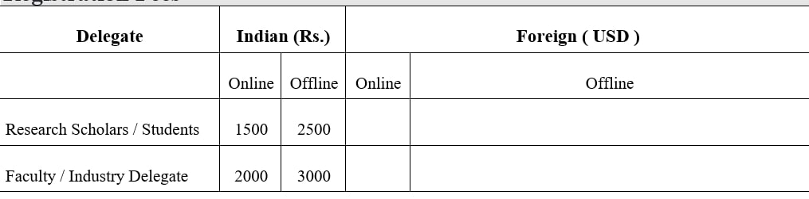
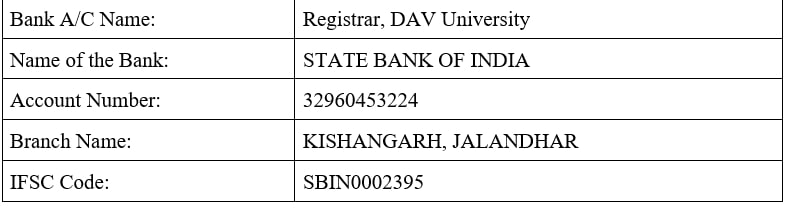

International Conference on Machine Learning and Human-Computer Interaction (MLHCI 2023), a Two Days International Level Conference on Machine Learning and Human-Computer Interaction invite original and quality contributions from researchers, academicians, and practitioners. The conference will be conducted during 1-2 February 2023 . The conference is open to academicians, research scholars, corporate executives, and students from the fields of Computer science or allied domains. The conference will be organized in a hybrid mode (offline conference with an option to present a paper online).
MLHCI 2022 aims to bring together researchers and practitioners to present their latest achievements and innovations in the area of Machine Learning and Human-Computer Interaction.
Machine learning is a subfield of artificial intelligence (AI). The main objective of machine learning generally is to understand the structure of data and fit that data into models that can be understood and utilized by people. Machine learning is a continuously developing field. Because of this, there are some considerations to keep in mind as you work with machine learning methodologies or analyze the impact of machine learning processes. The objective of this conference is to analyze the implications and challenges faced during the implementation of machine learning in different domains.
HCI is a field in need of significant innovation and breakthroughs toward radically new future forms of interaction Moreover, the conference will also emphasis on the challenges and innovative topics in Human-Computer Interaction theory, methodology, and practice, including, for example, novel theoretical approaches to interaction, novel user interface concepts and technologies, novel interaction devices, UI development methods, environments and tools, multimodal user interfaces, emotions in HCI, aesthetic issues, HCI and children, evaluation methods and tools, and many others.
DAV University (DAVU) at Jalandhar traces its roots to the legacy that has been reforming and redefining India's educational scenario for 135 years. The University is the culmination of the movement that started with the founding of the first DAV institute to propagate the ideals of the religious and social reformer Swami Dayanand Saraswati. DAV University is a multi-disciplinary institution, home to faculties of Engineering, Languages, Commerce, Business Management, Computer Applications, Sciences, Agricultural Sciences, Laws, Journalism, Education, and Physical Education. The University encourages interdisciplinary studies and believes that all areas of study can inform and enrich each other. Since DAV University aims for academic excellence, its curriculum conforms to that of the world's very best universities. This institution is set to become a global hub in the education, research, and placement of students.
Prospective authors are invited to contribute to and help shape the conference through submissions of their research papers. High-quality research contributions describing original and unpublished results of conceptual, constructive, empirical, experimental, qualitative, or theoretical work in all areas of machine learning and computer science are cordially invited for presentation at the conference. The conference solicits contributions of extended abstracts and papers that address the theme of the conference, related to one or more of the following tracks:
You are invited to submit a full-text paper as per the timeline and the guidelines. The full paper will be requested for subsequent publication opportunities. Upon payment of the registration fee, your presentation will be confirmed. Please ensure your submission meets the following conference guidelines for accepting scholarly papers:
You will receive the notification of acceptance/rejection of the abstract in your email.
The submission Web page for MLHCI 2023 is https://easychair.org/conferences/?conf=mlhci2023. You should make a link to this Web page from your conference Web page. If you specify any other Web site, your authors will be unable to submit to MLHCI 2023.
The peer-reviewed conference proceedings will include the complete manuscript of all the papers submitted and presented at the conference. A limited number of full-length papers, selected based on blind peer review, will be published in an ISBN Book / ISSN Journal, after the consent and signing of the copyright form by the author/s of the selected papers. Details of the journal will be shared with the selected authors, for their consent.
We encourage participants to attend the conference in offline in-person mode. However, you have the option to present in online mode, if it is not feasible for you to attend at the campus. At least one of the co-authors must register for the inclusion of the paper at the conference.
The registration fee should be paid through NEFT / IMPS / UPI as per the following details:
